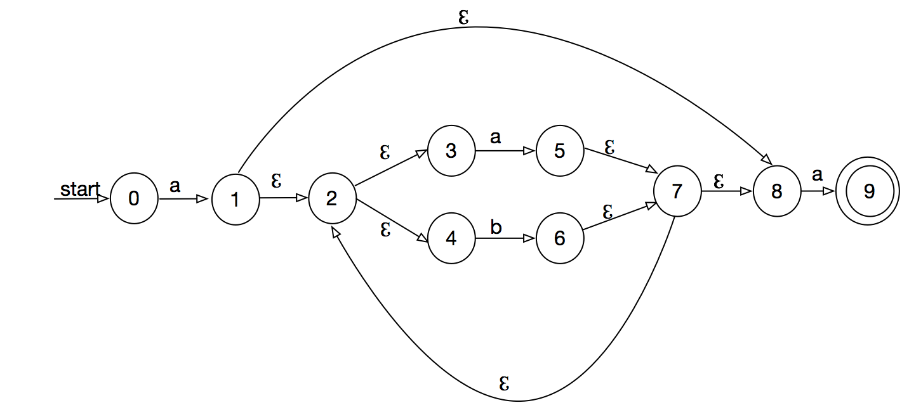
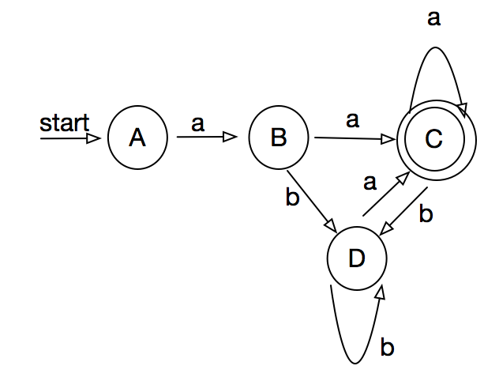
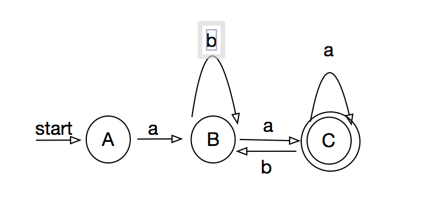

3.3.2
a(a|b)*a = {aa*a, ab*a }
((ℨ|a)b*)* = {ℨ, (ab*)*, b*}
(a|b)*a(a|b)(a|b) = {
a*a(a|b)(a|b),
a*(a|b),
a*b(a|b),
a*,
a*b,
a*b,
a*bb,
b*a(a|b)(a|b),
b*aa(a|b),
a*aaa,
b*aaab,
b*ab(a|b),
b*aba,
b*abb
}
3.3.3
- n + 1
- n + 1
- n - 1
- (n + 1) * n / 2
- n ^ 2
3.3.4
select -> [Ss][Ee][Ll][Ee][Cc][Tt]
3.4
1. a(a|b)*a
NFA: 
DFA:
| state | a | b |
|---|---|---|
| {0} | {1} | |
| {1} | {2, 3, 4, 5, 7, 8, 9} | {2, 3, 5, 6, 7, 8} |
| {2, 3, 4, 5, 7, 8, 9} | {2,3,4,5,6,7,8,9} | {2, 3, 5, 6, 7, 8} |
| {2, 3, 5, 6, 7, 8} | {2,3,4,5,6,7,8,9} | {2, 3, 5, 6, 7, 8} |
设
- {0} = A
- {1} = B
- {2, 3, 4, 5, 7, 8, 9} = C
- {2, 3, 5, 6, 7, 8} = D

合并不可区分状态B, D

3.4.3
- abababaab
| s | 1 | 2 | 3 | 4 | 5 | 6 | 7 | 8 | 9 |
|---|---|---|---|---|---|---|---|---|---|
| f(s) | 0 | 0 | 1 | 2 | 3 | 4 | 5 | 1 | 2 |
3.5
while {return(WHILE)}